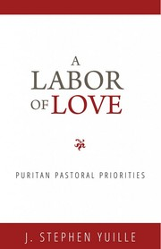
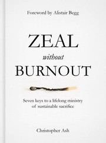

Shepherding the Flock
- The Shepherd LeaderTimothy WitmerPastor Drew:Get it at Grace Books →
By far the best book I have ever read on the ministry of biblical eldership.
It is the template for how our elders understand their work.Pastor Drew's pick - Meetings That WorkAlexander StrauchA short guide to elder meetings that are healthy and productive.Find it →Pastor Drew's pick
- Spurgeon the PastorGeoff ChangHow Spurgeon shepherded a church of thousands: membership, discipline, and the Lord's Table.Find it →Pastor Drew's pick
Preaching & Teaching
- Preaching: A God-Centred VisionMichael ReevesA short vision for preaching that is delightful, challenging, and inspiring.Get it at Grace Books →Pastor Drew's pick
- Feed My SheepDon Kistler, ed.Eleven pastors and scholars make the case for expository preaching.Find it →Pastor Drew's pick
- Why Are We So Often Boring?Bob FyallLessons for preachers from the Preacher of Ecclesiastes.Find it →Pastor Drew's pick
- Pastor Drew's pick
- The Hermeneutics of the Biblical AuthorsAbner ChouHow the prophets and apostles interpreted Scripture. Academic, and a must-read.Find it →Pastor Drew's pick
The Leader's Own Soul

A Labor of Love: Puritan Pastoral PrioritiesJ. Stephen YuilleGeorge Swinnock's sixteen desires for his ministry.Find it →Pastor Drew's pick
Pastor Drew's pick- Pastor Drew's pick
Difficult People & Anxious Times
The Church Today
- Shepherds for SaleMegan BashamHow progressive money and influence have shaped evangelical leaders. Well researched.Find it →Pastor Drew's pick
Reviewing this draft?
Thank you for helping. As you read, jot down anything you would add, remove, or move, and anything in a note that seems off. Then send your thoughts to Pastor Drew.